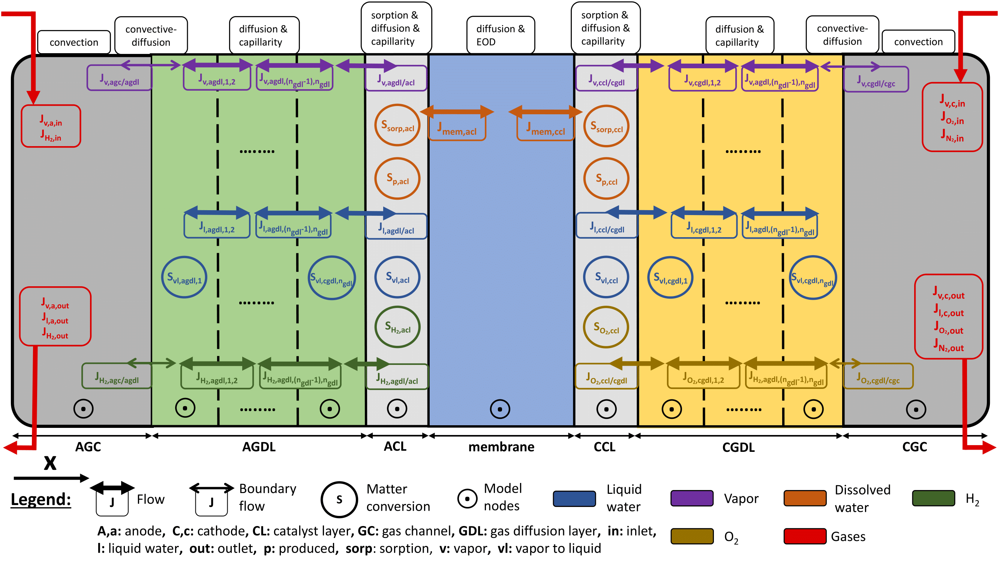

AlphaPEM
AlphaPEM is an open-source software package for simulating proton exchange membrane fuel cell (PEMFC) systems for embedded applications. It is based on a physics-based, one-dimensional (1D), dynamic, two-phase, and isothermal model. It can quickly simulate the internal states and voltage dynamics of PEMFC systems, and produce polarization and EIS curves. It can also automatically calibrate the undetermined parameters of the model to simulate a given real fuel cell system.
A detailed presentation of this program was published in the peer-reviewed journal SoftwareX.
Improvements to AlphaPEM, such as the addition of heat transfer modelling and spatial extension to 1D+1D, will be available in the future.
Table of Contents
Installation
To install AlphaPEM, follow these steps in a shell:
-
Clone the repository:
git clone https://github.com/gassraphael/AlphaPEM.git -
Navigate to the project directory:
cd AlphaPEM -
Update the Python package manager, pip, to the latest available version:
pip install --upgrade pip -
Install the required dependencies (eventually in a specific environment):
pip install numpy scipy matplotlib colorama geneticalgorithm2 python3 -m pip install git+https://github.com/RedFantom/ttkthemes
Major updates
- V1.0 - 2024.09.05 - This version of AlphaPEM corresponds to the one developed during Raphaël Gass's PhD from 2021 to 2024.
Work in progress
- The polarization curves from the EH-31 fuel cells, provided by default, are no longer calibrated due to recent modifications made to the equations. A calibration of the indeterminate parameters will be performed in the future to correct this issue.
Related publications
The detailed model description and simulation results can be found in the following articles and thesis.
-
Published journal papers:
-
AlphaPEM: An Open-Source Dynamic 1D Physics-Based Pem Fuel Cell Model for Embedded Applications (2025, 1st author)
-
An Advanced 1D Physics-Based Model for PEM Hydrogen Fuel Cells With Enhanced Overvoltage Prediction (2025, 1st author)
- In the International Journal of Hydrogen Energy, in arXiv, in HAL or in SSRN (postprint).
- The aim of this study was to introduce the dynamic 1D model developed during 2021-2024, emphasizing the adjustment of the equations for this specific model and their numerical resolution. Furthermore, a novel coefficient is proposed to establish a physical relationship between the voltage drop at high currents, the quantity of liquid water in the cell, and operating conditions.
- 
-
A Critical Review of Proton Exchange Membrane Fuel Cells Matter Transports and Voltage Polarisation for Modelling (2024, 1st author)
- In the Journal of the Electrochemical Society or in HAL (postprint).
- The aim of this work was to compile, within a single article, all the equations required for the physical modeling of a fuel cell. Each equation is complemented with explanations, critical analysis, and suggestions for potential enhancements.
-
-
Thesis manuscript:
- Advanced physical modeling of PEM fuel cells to enhance their performances (2024, 1st author)
- In HAL (final version).
- The objective of this thesis was to develop an advanced modeling approach for PEMFCs to optimize their control and improve performance. A 1D, dynamic, two-phase, isothermal model was proposed, leading to the development of the open-source software AlphaPEM, which enables accurate simulations and facilitates predictive control strategies for enhanced fuel cell operation.
- Advanced physical modeling of PEM fuel cells to enhance their performances (2024, 1st author)